Swordsmanship
All swords, daggers, knives and lances. Fighting with them trains this skill (it covers the old Slash, Thrust, Fencing, Heavy Arms and Unholy Combat).
Covers the original skills: Slash, Thrust, Fencing, HeavyArms, UnholyCombat.
Level guide
| Level | Unlock | |
|---|---|---|
| 1 | 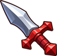 | Wield a Dagger |
| 1 | 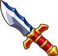 | Wield a Knife |
| 1 | Wield a Short Sword | |
| 10 | 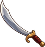 | Wield a Scimitar |
| 15 | 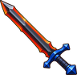 | Wield a Dark Sword |
| 15 | Wield a Seax | |
| 20 | 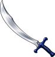 | Wield a Steel Scimitar |
| 25 | 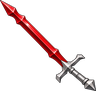 | Wield a Fire Sword |
| 25 | 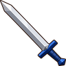 | Wield a Long Sword |
| 30 | Wield a Dark Scimitar | |
| 30 | 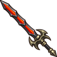 | Wield an Unholy Lance |
| 35 | Wield a Knight's Sword | |
| 40 | 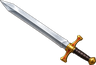 | Wield a Broad Sword |
| 45 | 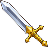 | Wield a Sword of Hope |
| 45 | Wield an Ice Sword | |
| 50 | 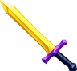 | Wield a Gold Sword |
| 55 | 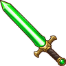 | Wield a Green Laser Sword |
| 55 | Wield a Jarl's Sword | |
| 55 | 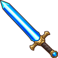 | Wield a Laser Sword |
| 55 | 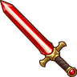 | Wield a Red Laser Sword |
| 60 | 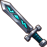 | Wield a Rune Sword |
| 65 | 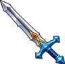 | Wield a Dragon Sword |
| 70 | Wield a Star Sword | |
| 80 | 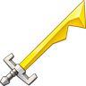 | Wield a Pharaoh Sword |